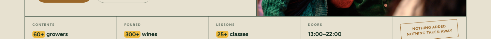
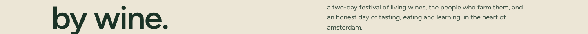
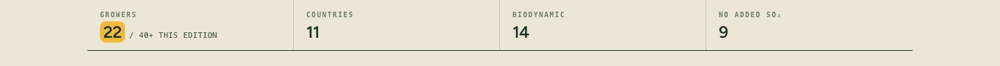

natural wine festival a'dam
design decisions
Alles wat visueel beoordeeld moet worden voor we het design-systeem vastleggen. Per punt: het echte beeld, de opties, en mijn voorstel. Wijs aan wat je wilt; ik giet het in tokens en rol het over alle pagina's uit. Volgorde = impact op het skelet.
skelet · nav
01 · navigatie
Nu drie implementaties met verschillende link-sets. Welke wordt de standaard voor élke pagina?
A · index — full-bleed, geen "trade" in de nav.
B · subpagina's — binnen de content-breedte, mét "trade". mijn voorstel
C · workshops — als B, maar met een lijn onder de balk.
Voorstel: B als basis (breedte volgt de content, "trade" hoort erin), en de logo-wordmark linkt overal naar home. Detailpagina's (maker/workshop) krijgen links een terug-link.
skelet · type
02 · kopschaal & "united by wine"
De h1 is per pagina verzonnen: 76 → 84 → 148px, 8 maten totaal. En "united by wine" staat op index in Vicky (serif-script), op about in gewone Figtree.
Kopschaal: terug naar 2-3 vaste maten (bv. XL hero, L sectie, M kaart) i.p.v. 8. nodig
"united by wine": één behandeling. Overal Vicky (kenmerkend), óf overal Figtree (rustiger).
Voorstel: Vicky reserveren voor precies één ding — de payoff "united by wine" — en overal hetzelfde. De grote koppen in Figtree op een vaste schaal. Zeg maar welke 2-3 maten je wilt.
skelet · footer
03 · footer
Twee footers in omloop. Eén sitebreed kiezen.
Boven · paper + Vicky (index) — licht, luchtig, sluit aan op de pagina.
Onder · donker blok (subpagina's) — zwaar anker, sluit de pagina af. mijn voorstel
Voorstel: het donkere blok sitebreed — het geeft elke pagina een duidelijk einde en houdt de mailinglijst-CTA sterk. De Vicky-payoff kan erin.
component · close
04 · luide ochre "take your place"-band
Nu op index + about. Op elke pagina, of alleen op de marketing-pagina's?
Overal — elke pagina eindigt met dezelfde ticket-duw.
Alleen marketing (home, about, natural-wine) — detailpagina's houden hun eigen einde. mijn voorstel
component · stat-bar
05 · stat / spec-balken
Vier varianten die hetzelfde doen (label + waarde). Eén component maken.



Voorstel: één stat-bar met N cellen (label + waarde) en een optionele stempel-/CTA-cel. Amber-regel: markeer per balk het ene schaarse getal, niet meer.
kans · iconen
06 · 17 iconen die we hebben en nergens gebruiken
Twee families: ronde pictogrammen (oyster, tasting, sake, shipment, brain/mind, eat-drink-pair-love, minimarket) en "church"-emblemen per festival-onderdeel. Fel groen+geel — dat botst met het huidige rustige palet, dus de eerste keuze is: as-is of hertekenen in mono.
| icon | waar inzetten |
|---|
| church · the winemakers | sectie-emblem "the makers" / kop winemakers-pagina |
| church · workshops & masterclasses | "the lessons" / kop workshops-pagina |
| church · winemakers dinner | "the supper" / kop dinner-pagina |
| church · market · winestore XL · minimarket | het market-onderdeel ("koop het bij de maker") |
| church · bar brut nature · gems bar | bar-onderdelen (nog geen sectie — kans om ze te introduceren) |
| church · camping culinair | food/eet-onderdeel |
| oyster · tasting · eat-drink-pair-love · food | the day / oyster bar & keuken / food-pairing |
| shipment | "carry it home" / distributie / trade-pagina |
| brain / mind | The Natural (sommelier) of de workshops (leren) |
| sake | een drank-/programma-onderdeel |
Twee keuzes: (1) as-is (fel groen+geel, luide accenten — dan hebben ze hun eigen plek nodig, niet naast fijne tekst) of hertekenen in mono (ink/ochre, past in het systeem als sectie-emblemen). (2) Waar zetten we ze in: als sectie-emblemen naast de §-labels, of als features-grid ("wat is er te doen") ergens op de home? Mijn voorstel: mono-versie als sectie-emblem, plus een features-grid op de home die de church-set inzet.
token · breedte
07 · container-breedte
Subtiel: index gebruikt 1180px + een schaal-gutter; alle subpagina's 1280px + vaste 46px. Eén token kiezen.
Geen apart beeld nodig — het is een maat-verschil. Voorstel: één breedte (1280) + één gutter-token clamp(24px, 5vw, 64px) overal.
content · feiten
08 · feiten die nog kloppend moeten (geen design)
- Editie-historie: pagina zegt edition #5 (2025 = editie 3), maar de about-zin "pilot 2022 + edities 2023/2024" telt niet op. Ik heb de volledige historie nodig om de zin te fixen.
- Twee-dagen-uren: de marketing-balken tonen nog één-dag-tijden. Echt: zo 28 feb 11:00–13:00 (pros) → 13:00–18:15 (allen); ma 1 maart 10:00–16:00 (trade). Verwerken?
- for-professionals = specifiek maandag 1 maart (trade-dag) — pagina mag dat zeggen.
- Growers staan nu op 40+ (afgesproken). Wines 300+, classes 25+ ongewijzigd — kloppen die nog?